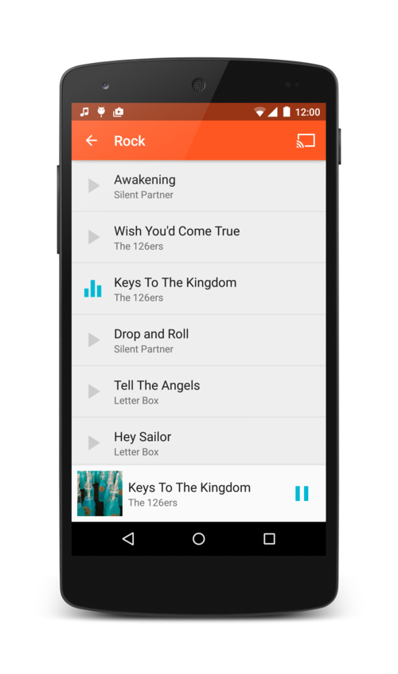
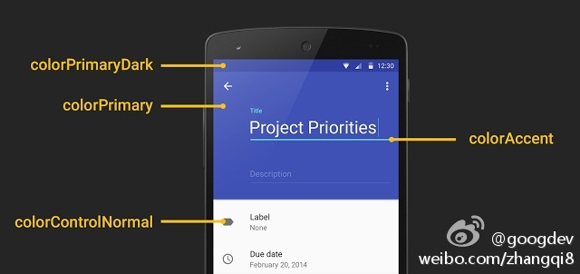
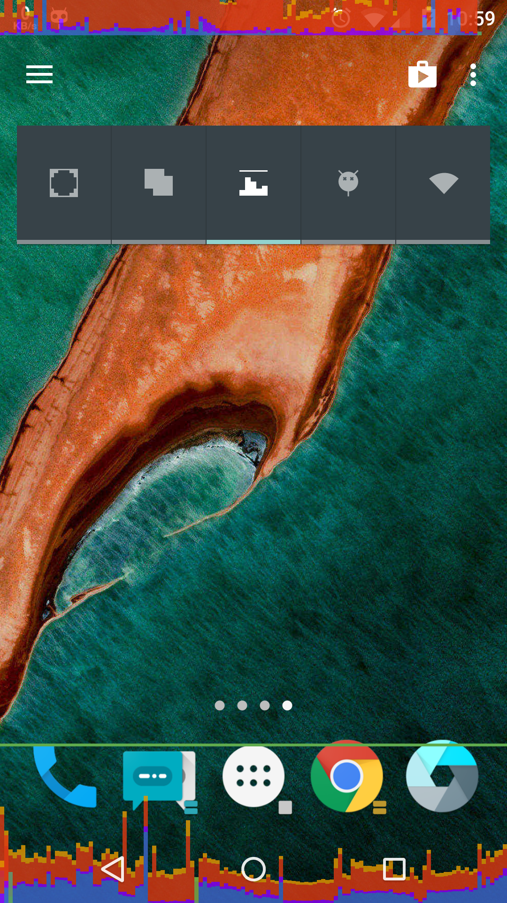

Android学习资料大全
前言
学习Android光看书和看视频是不够的，需要实践和一些网络资料的收集，慢慢积累，才能提高自身水平。本文记录一些常常需要查看的Android学习网站和博客，不时翻阅一下，以提高自身水平。
教程
-
Android 开发列表
awesome-android -
github上的一个项目，收集了好多的Android开源项目
android-open-project -
一个分类特别好的网站
Android Arsenal -
MaterialDesign资料整理
Awesome-MaterialDesign -
coursera-android
一个android教程类项目，8周完成结业。基本上囊括了android所有知识点，如果你想把android方面的知识系统地整理一遍，可以果断也把它fork下来，一个一个开始练习，总共有100多个例子。 -
50个Android开发技巧
Vector_Yi整理的Android开发技巧 -
android-best-practices
android编程最佳实践 -
android-UniversalMusicPlayer
google官方跨设备的例子，一款播放器，UI和交互都超级棒，而且同时支持手机、平板和Android Wear。
 -
Android-Material-Example
另一个Android L学习的例子。 -
Material-Animations
Material动画例子
工具
-
Android Button Maker
Android Button Maker是一个可以在线生成按钮代码的工具。Android API提供了XML文件定义的几何形状的Drawable资源，包括颜色、边界和梯度。这些按钮的生成是基于drawable形态的XML代码，这样可以比普通的png按钮加载得更快。你可以在设置面板上自定义按钮的属性，然后获取其源码。 -
AndroidAssetStudio
Asset Studio可以让你快速简单地从已经存在的图片、剪贴画或者文本资源中生成图标。这些图标可以应用在
Launcher icons Action bar and tab icons
Notification icons Navigation drawer indicator
** Generic icons -
ActionbarStyleGenerator
这个ActionBar风格生成器可以让你轻松地创建一个简洁、有吸引力且无漏洞的自定义actionbar。它会生成所有9种必须的patch assets以及相关XML的drawables和styles文件，这些文件可以直接复制到你的项目中。 -
AndroidHolo
这个Android Holo颜色生成器可以让你简单地为你的应用创建Android组件，如editext或者spinner，并且可以使用自己的颜色。它会生成所有9种必须的patch assets以及相关XML的drawables和styles文件，可以直接复制这些文件到你的项目中。 -
AndroidLayoutBinder
Android Layout Binder会将你安卓的XML布局文件转换成一系列的声明，绑定保存所有的人工输入。键入一个前缀，选择XML文件上要粘贴的范围，然后点击生成。选择“verbose”来找出所有被跳过的区域的原因。 -
APKAnalyser
这是一个静态、虚拟分析工具，你可以全面地概览应用的架构。可以用它来检查API参考文档，查看应用依赖还有反编译字节码。APKAnalyser是一个完整的开源工具链，它支持修改应用的二进制代码，你可以重新打包、安装、运行以及验证logcat的结果。

-
maven-android-sdk-deployer
一个使用Maven Android Plugin插件安装Android SDK组件的工具 -
Material Palette调色板
Material Design出来一段时间了，身为Android开发人员想要自己适配一套Material Design，但是又苦于缺少设计方面的知识与理解，怎么办呢？这个网站就可以自动帮你生成调色板。
 -
Android-Iconics
这是一个可以让你在你的项目中使用几乎任何字体图标的库。默认包含 FontAwesome 和 Material Design Icons 还包含 Meteocons 插件。你甚至可以添加任何你自定义的字体图标（typeface）。 -
android-actionbarstylegenerator
action bar风格在线制作。
UI组件
-
Material Design资源
一大波优质的Material Design资源免费下载 -
Material UI
Material UI 是一个 CSS 框架和一组实现谷歌 Material Design 设计规范的 React 组件。可以用在html5方式的APP中 -
android-ui
Android UI库， Android L风格。 -
Euclid
一个非常精美的用户信息页面的实现，动效很细腻。 -
android-typeface-helper
typeface效果 -
android-flip
可以实现类似Flipboard一样的翻页效果。 -
android-viewbadger
为视图增加badger。可以做的更好看点。 -
AndroidViewAnimations
漂亮的视图动画。 -
JazzyViewPager
为ViewPager增加一条切换动画 -
labelview
贴纸效果。 -
AndroidTagGroup
一个漂亮的标签组控件。 -
AutoCompleteBubbleText
自动选择，可用于tag选择 -
BlurEffectForAndroidDesign
模糊效果的演示。 -
MaterialDesignLibrary
为Adnroid 2.2等低版本应用增加Android L 5.0风格的组件。 -
RippleEffect
涟漪效果 -
material-ripple
为view增加的Android L涟漪效果的包装类 -
HoloColorPicker
Holo风格的颜色选择器。 -
MaterialViewPager
ViewPager， Material Design风格 -
FlippableStackView
堆栈效果 -
HorizontalStackView
另一个横向堆栈效果 -
GiftCard-Android
礼品卡效果 -
cheesesquare
Android 设计库的演示 -
Button
- android-floating-action-button
Android L风格的浮动按钮， 红色小鲜肉。

- Android-Bootstrap
bootstrap风格的按钮。 使用Font Awesome图标字体。 - android-bootstrap
不同于上面的Android-Bootstrap。 此项目是一个Android应用程序的模版， 相当于一个脚手架的功能。

- android-process-button
很酷的一个组件，可以在按钮下部显示漂亮的进度条，就像GMAIL一样。 - fab
一个支持很多自定义属性的Floating Action Button控件。 - FloatingActionButton
模仿Android L的Floating Action Button (FAB)， 可以用在Jellybean 和 KitKat中 - AndroidFloatLabel
浮动标签， 按需显示。 - Android-UndoBar
- fab-toolbar
Material Design风格的FAB工具栏效果
- android-floating-action-button
-
Menu
- ActionBarSherlock
一个功能强大的ActionBar组件(不仅仅是ActionBar)。 Android 4.0+上使用native action bar， 低版本的Android模拟实现。强大到无语了，必须关注的一个开源组件。 - SlidingMenu
一款优秀的侧滑菜单组件。 Google+, YouTube和Facebook在它们的应用中采用的侧滑菜单流行开来， 国内也有很多的应用如网易新闻等也采用了这种菜单方式。 侧滑菜单组件很好几种， 尤以此款最为好用。 看看官方网站上的知名用户就知道了。 - android-menudrawer
又一个滑动菜单的组件。 - android-undergarment
抽屉组件。
集成这个组件非常简单 ,只要在activity的oncreate中加入mDrawerGarment = new DrawerGarment(this, R.layout.dashboard); - DragLayout
使用support.v4包下的ViewDragHelper实现QQ5.0侧滑 - android-satellite-menu
类似Path一样的菜单。 - L-Navigation-Drawer
替换Android L的导航抽屉类。 也就是左边拖动菜单。 - material-menu
模仿Android L的drawer, back, dismiss and check icons动画 - ArcMenu
又一个类似Path的环形菜单。
- ActionBarSherlock
-
Application
- richeditor-android
超酷的富文本编辑器 - superCleanMaster
一键清理 开源版，包括内存加速，缓存清理，自启管理，软件管理等。

- facebook-android-sdk
Facebook提供的SDK， 可以在应用中集成Facebook. - MaterialSettings
可以让你轻松创建Material Design风格的Settings Activity的库。 - ZhihuPaper
个人开发的知乎日报客户端。 - 更纯净的知乎日报
- chromeview
Android webview组件的实现， 但是基于最新的Chromium 代码。 - android-pdfview
- transparent-over-animtabsview
模仿网易云音乐 - LetterImageView
类似Android的邮件应用， 用首字母作为图片。 - chromium-webview-samples1
- chromium-webview-samples2
- chromium-webview-samples3
- chromium-webview-samples4
- chromium-webview-samples5
- richeditor-android
-
Pull-Down
- PullDownListView
仿微信首页的下拉效果，非常细腻。 - Taurus
下拉刷新的动画好赞。 - Android-PullToRefresh
你不陌生， 在列表或者视图的顶部或者底部拖动可以刷新数据和页面。可以和ListView、ExpandableListView、GridView、WebView、ScrollView、HorizontalScrollView、ViewPager配合使用。 - android-PullRefreshLayout
下拉刷新布局， 比SwipeRefreshLayout更漂亮。 - android-pulltorefresh
又一个拖动刷新的组件。到此为止说了好多又了。 因为有些功能确实有多个不错的实现。
- PullDownListView
-
Image
-
SimpleTagImageView
一个可以在图片四个角显示一个小标签的ImageView，并且可以控制标签的宽度和背景颜色。 -
Android-Universal-Image-Loader
强大灵活的加载、缓存、显示图片的库。

-
picasso
强大的图像下载和缓存库。

-
PhotoView
ImageView扩展， 支持放缩和手势。 -
ion
又一个图像异步加载库。至少推荐三个了， 轮子不少。关注度很高 -
Android-Ultra-Photo-Selector
一个图片选择器控件，支持选择多张图片、浏览设备上所有包含图片的文件夹、预览选择的图片并且支持缩放。 -
MultiImageSelector
国人开发的一个多图像选择组件 -
cropper
图像剪切和旋转。 -
android-crop
图像裁剪
-
-
EditText
- GridPasswordView
仿微信/支付宝的密码输入框效果。 - Shimmer-android
闪烁发光的文本框。 - android-edittext-validator
文本框校验
- GridPasswordView
-
Desktop
- DevelopQuickSetting
一个快速开启关闭开发者设置的工具，提供了app界面和桌面widget，能快速打开关闭overdraw，layout border，gpu rendering，adb wifi，不保存activity实例等功能。
需要root权限

- DevelopQuickSetting
-
Indicator
- Android-ViewPagerIndicator
滑动页面几乎成了现在国内的应用的标配了，尤其在你第一次安装/启动应用时， 总会有几张介绍页面让你滑动显示。 用它吧，不会辜负你的。 - SpringIndicator
模仿Morning Routine的引导页效果.
- Android-ViewPagerIndicator
-
Layout
- AndroidStaggeredGrid
想做瀑布流式的应用吗？用它吧。
- cardslib
一种卡片式的布局控件。 记得以前的有道词典的默认页就是这种布局

- LDrawer
使用material design动画的drawer图标 - AndroidViewHover
一种优雅的显示上下文和菜单的库 - FreeFlow
comcast出品的一个布局引擎。 FreeFlow让你很容易的定制布局和漂亮的转换动画。 - android-viewflow
可以水平滚动的视图。 - StaggeredGridView
瀑布流。类似Pinterest。 - KugouLayout
一个模仿酷狗播放器滑动返回的layout，可以让你的app有更丰富便捷的手势操作，支持activity滑动返回和普通layout的滑动显示/隐藏两种模式。 - StickyGridHeaders
可以固定header和分区的Grid。 - ArcLayout
超酷的弧形布局 - AndroidSwipeLayout
功能强大的swipe布局。 - android-sliding-layer-lib
滑动层框架， 支持左右滑动，全屏。 - PinterestLikeAdapterView
瀑布流。
- AndroidStaggeredGrid
-
Chart
- WilliamChart
图表组件。 - hellocharts-android
一个图表库， 带少量动画。 - GraphView
可以产生放缩的线图和直方图。 - MPAndroidChart
非常不错的图表工具。 - AndroidCharts
图表控件 - Android-Charts
国人实现的图表控件 - desCharts
图表控件 - XCL-Charts
国人出品， 图表控件，种类很多。
- WilliamChart
-
Listview
- ListViewAnimations
为ListView增加动画， 还提供滑动删除选定项的功能。 类似Android的邮件的删除操作。 - StickyListHeaders
header可以固定的组件。 看下图。 - drag-sort-listview
在ListItem拖动重排序。 - FadingActionBar
折叠风格的ActionBar. - Android-SlideExpandableListView
有一个可以滑动的ExpandableListView组件。 - pinned-section-listview
GroupName滑动到顶端时会固定不动直到另外一个GroupName到达顶端的ExpandListView - PullZoomView
最近国内用的比较多的一个风格。 拖动时头部缩放。 - Android-SwipeToDismiss
演示ListView滑动删除。 - MultiChoiceAdapter
ListView 支持多选。 - PinnedHeaderExpandableListView
国人实现的一个ExpandableListView,头部可以固定， 并且可以伸缩。 - PullToZoomInListView
滑动ListView时使其HeaderView跟随滑动缩放. - FlyRefresh
创意Replace的Android实现，很cool. - AnimateCheckBox
酷炫CheckBox
- ListViewAnimations
-
Calendar
- Android-Week-View
日历组件。 - android-times-square
square出品的日期选择组件。 - android-betterpickers
更好的时间、日期库。 - material-calendarview
- DatePicker
中国人开发的日期选择器
- Android-Week-View
-
Toast
- Crouton
Toast之外的另以选择。 - SuperToasts
扩展的Toast.
- Crouton
-
Progress
- circular-progress-button
环形进度条按钮。 - ProgressWheel
环形进度条。 - dashed-circular-progress
圆形轨迹进度条控件。 - NumberProgressBar
漂亮的带数字的进度条。 - CircleProgress
圆圈进度条 - ElasticDownload
酷炫进度条
- circular-progress-button
-
Font
- Calligraphy
在Android中更容易的使用字体。 - [android-iconify][UI-font 2]
集成FontAwesome 。
- Calligraphy
-
ActionBar
- GlassActionBar
毛玻璃效果的action bar. - NotBoringActionBar
拖动时顶部可以收缩。
- GlassActionBar
-
Dialog


类库
- roboguice
google guice框架在Android平台上的实现。 - android-async-http
基于Apache http client实现的支持异步、回调的android http client组件。 - androidannotations
将注解引入到Android开发中，极大的减少代码里，可以更好的维护代码。 - retrofit
类型安全的Restful client库。 - dagger
一个快速的依赖注入库。这个square公司出了不少的组件库。 square公司就是那个移动支付的创业公司。 - okhttp
还是square出品， HTTP+SPDY 客户端。 - EventBus
一个专为Android优化的发布订阅框架, event bus模式。 可以在Activity, Fragment 和后台线程之间交流数据。 - butterknife
专为视图注入库。 - robospice
一个模块化的Android类库， 可以更容易的编写异步的长时间运行的任务。 - AndroidAsync
又是异步处理库， 支持socket,http (client+server),websocket 和socket.io ，基于nio。 - ActiveAndroid
active record风格的操作Android SQLite 数据库。 - androidquery
JQuery很熟悉吧。 这是Android版的JQuery。 - greenDAO
一个轻量级的快速的ORM方案。 操作SQLite 数据库。 - Bolts-Android
一套底层库。 - scaloid
极大的减少Android得代码，更易维护。 - conceal
Facebook的快速加密类。 - android-common
国人实现的一个工具包。 - xUtils
国人实现的一个工具包。 - android-priority-jobqueue
Path出品的job queue。 - android-sqlite-asset-helper
数据库辅助类。 包括数据库的创建与升级。 - tape
一组queue类。 square出品。 - spring-android
- joda-time-android
为Android做了优化 - spydroid-ipcamera
将你的收集作为监控设备。 - ACRA
ACRA是一个可以让安卓应用自动发出GoogleDoc格式崩溃报告的函数库。安卓开发者可以通过ACRA获取应用崩溃或者错误行为的数据。如果有一个崩溃发生，你的应用不会越过已有的系统崩溃提醒或者报告功能来添加用户提醒。如果使用Toast、状态提醒条或者直接对话框模式，这个“强制关闭”的对话框不会再显示，就算设备上原生系统的提醒功能开启也不能发送一个另外的报告。 - jpinyin
JPinyin是一个汉字转拼音的Java开源类库，在PinYin4j的功能基础上做了一些改进。
Game Engine
- libgdx
libGDX是基于OpenGL的跨平台的游戏开发框架。 - AndEngine
知名的Android 2D OpenGL 游戏引擎。 - ogengine
国人开发的国际著名开源引擎AndEngine的一个分支 （往上看）。遵循LGPL开源协议使用OpenGL ES进行图形绘制。同时集成了Box2D物理引擎，因此可以实现复杂的物理效果。 - citrus
快速且轻量级的2D & 3D游戏引擎。 - Cocos2d-Android
知名的游戏引擎 - gameclosure
JavaScript 游戏引擎 - 游戏引擎列表
维基百科上的各种游戏引擎， 各种平台的引擎列表， 全。
Android HTML5应用
- PhoneCap
早在2011年10月，Adobe收购了Nitobi Software和它的PhoneGap产品，然后宣布这个移动开发框架将会继续开源，并把它提交到Apache Incubator，以便完全接受ASF的管治。 - Cordova
Cordova是贡献给Apache后的开源项目，是从PhoneGap中抽出的核心代码，是驱动PhoneGap的核心引擎。你可以把他想象成类似于Webkit和Google Chrome的关系。
Adobe将会继续以Cordova加上PhoneGap Build和Adobe Shadow的组合提供PhoneGap。 - Cordova-SQLitePlugin
- awesome-cordova
Cordova插件列表 - ionic
基于Cordova的快速创建平台。 - mui
国内厂商dcloud开源的一个高性能的html5框架。 - lungo
- awesome-html5
- Pixi.js
- MelonJS
- Crafty
- cutjs
Copyright © 2015 Powered by MWeb, Theme used GitHub CSS.